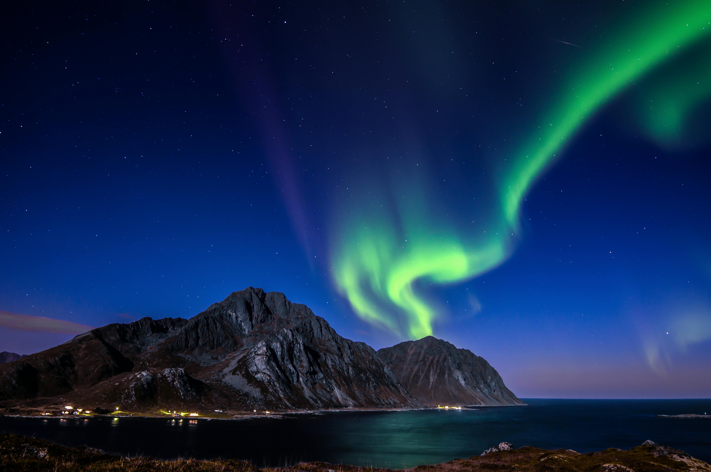
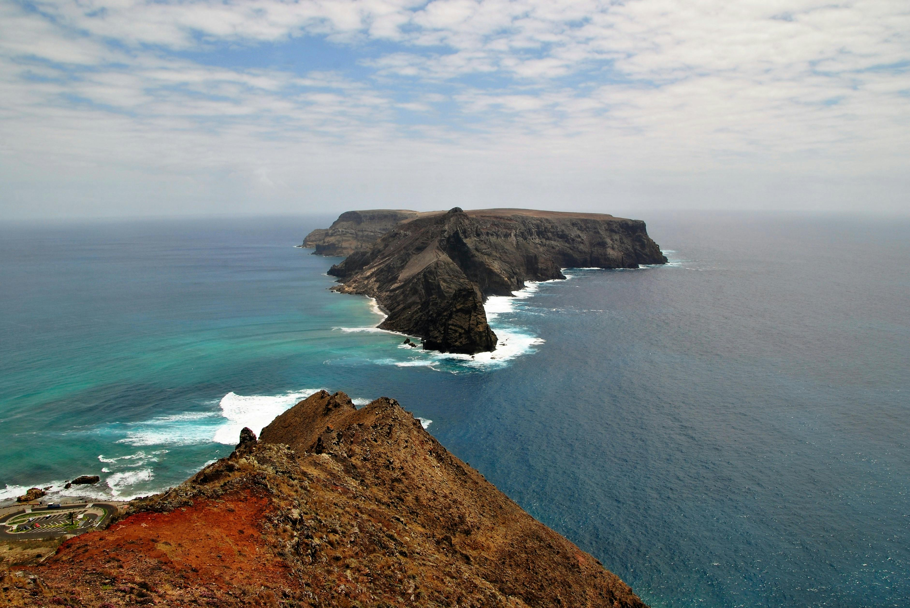

EUROPA: EL LEGADO DE UN CONTINENTE
Sumérgete en una odisea que cambiará tu perspectiva.
Europa te invita a explorar su fascinante diversidad y descubrir su vasto legado cultural. Desde las antiguas ruinas de Roma hasta los encantadores canales de Venecia, cada esquina del continente ofrece una experiencia única y enriquecedora. Te sumergirás en siglos de historia, arte y arquitectura, donde cada día es una nueva aventura.
Los paisajes europeos te cautivarán, desde los picos nevados de los Alpes hasta las impresionantes costas del Mediterráneo. Explorarás ciudades cosmopolitas y pueblos pintorescos, encontrando la belleza en cada rincón. La hospitalidad de sus habitantes te recibirá con calidez, invitándote a descubrir sus tradiciones y estilos de vida únicos.
Cada experiencia en Europa es inolvidable, desde degustar la exquisita gastronomía local hasta explorar las maravillas arquitectónicas de sus ciudades. Al final de tu viaje, habrás sido testigo de la grandeza de un continente lleno de historias por descubrir y te llevarás contigo recuerdos que perdurarán para siempre.
Islas Lofoten
Situadas al norte del Círculo Polar Ártico, las Islas Lofoten son un tesoro natural en el corazón de Noruega. Este archipiélago, con sus montañas majestuosas que se elevan sobre fiordos profundos, ofrece una escapada inigualable en el paisaje escandinavo. Más allá de sus playas de arena blanca, las Lofoten son conocidas por sus encantadores pueblos pesqueros, donde las casas de colores vibrantes se reflejan en las aguas cristalinas.
Explorar las Lofoten es sumergirse en la cultura y el estilo de vida nórdicos. Desde caminatas por senderos escarpados hasta paseos en kayak entre islas, cada momento ofrece una conexión íntima con la naturaleza. En invierno, el espectáculo de las auroras boreales iluminando el cielo nocturno agrega un toque mágico a esta experiencia ártica.
Para los amantes de la aventura, las actividades al aire libre abundan. Ya sea escalando montañas escarpadas, pescando en alta mar o surfeando en aguas frías, siempre hay algo emocionante que hacer. Y después de un día de exploración, los acogedores cafés y restaurantes locales ofrecen la oportunidad perfecta para disfrutar de la cocina noruega tradicional y relajarse junto a una chimenea crepitante.
Las Islas Lofoten son mucho más que un destino turístico; son un santuario natural donde la belleza del Ártico se encuentra con la calidez de la hospitalidad escandinava. Para aquellos que buscan una escapada única en Europa, las Lofoten prometen una experiencia que perdurará en la memoria mucho después de regresar a casa.
Santorini

Anidada en el Mar Egeo, Santorini emerge como un paraíso de postal, donde las casas encaladas se aferran a acantilados escarpados y los atardeceres dorados pintan el cielo de tonos cálidos. Esta isla griega, famosa por sus espectaculares vistas y su encanto pintoresco, ofrece una experiencia inigualable en el corazón del Mediterráneo.
Desde el momento en que llegas a Santorini, te sumerges en su rica historia y su legado cultural. Los pueblos blancos y azules, como Oia y Fira, son un laberinto de callejuelas adoquinadas y plazas soleadas, donde cada esquina revela una nueva vista panorámica del mar infinito. No es de extrañar que artistas y poetas hayan encontrado inspiración en esta tierra de ensueño durante siglos.
Explorar Santorini es descubrir una variedad de experiencias únicas. Desde recorridos por antiguas ruinas arqueológicas hasta excursiones en barco por las aguas turquesas que rodean la isla, cada día ofrece una aventura emocionante. Y cuando llega la noche, los restaurantes junto al mar sirven delicias griegas frescas, mientras que los bares en las alturas ofrecen vistas panorámicas incomparables y cócteles artesanales.
Para aquellos que buscan relajarse y rejuvenecer, Santorini no decepciona. Con sus playas de arena negra y roja, como Perissa y Kamari, y sus lujosos spas boutique, la isla ofrece el escenario perfecto para escapar del ajetreo de la vida cotidiana y sumergirse en la serenidad del Mediterráneo.
Santorini es mucho más que una isla de vacaciones; es un destino que cautiva los sentidos y alimenta el alma con su belleza natural y su encanto atemporal. Ya sea explorando sus antiguos senderos, disfrutando de la cocina griega tradicional o simplemente contemplando la puesta de sol desde un acantilado, cada momento en Santorini es una experiencia que perdura para siempre en el corazón.
Madeira
Situada en medio del Atlántico, Madeira es un oasis de verdor y belleza que emerge del océano como un jardín flotante. Conocida como la "Perla del Atlántico", esta isla portuguesa ofrece una experiencia única que combina paisajes espectaculares, cultura vibrante y una hospitalidad cálida y acogedora.
Al llegar a Madeira, te reciben sus montañas cubiertas de exuberante vegetación y sus acantilados escarpados que se sumergen en el mar azul profundo. Los pueblos pintorescos, como Funchal y Santana, son una muestra del encanto tradicional de la isla, con sus casas de techos rojos y calles empedradas que invitan a explorar.
Explorar Madeira es adentrarse en un mundo de maravillas naturales. Desde los picos más altos de las montañas hasta las profundidades del océano, cada rincón de la isla ofrece una nueva aventura. Los senderos de levada, que serpentean a lo largo de antiguos canales de riego, ofrecen la oportunidad de descubrir cascadas ocultas y bosques de Laurisilva, un ecosistema único declarado Patrimonio de la Humanidad por la UNESCO.
La cultura de Madeira se refleja en su gastronomía, su música y sus festivales coloridos. Los restaurantes locales sirven delicias culinarias como el espetada (pinchos de carne a la parrilla) y el bolo do caco (pan de ajo tradicional), mientras que las tabernas ofrecen vinos y licores locales, como el famoso vino de Madeira.
Para aquellos que buscan relajarse y disfrutar, Madeira cuenta con una variedad de playas y balnearios, donde se puede disfrutar del sol y el mar en un entorno tranquilo y sereno. Además, los hoteles y resorts de lujo ofrecen una experiencia de alojamiento inigualable, con vistas panorámicas al océano y servicios de clase mundial.
En resumen, Madeira es un destino que cautiva los sentidos y eleva el espíritu con su belleza natural y su ambiente relajado. Ya sea explorando sus paisajes impresionantes, disfrutando de su cultura vibrante o simplemente relajándose junto al mar, cada momento en Madeira es una experiencia que perdura para siempre en el corazón.